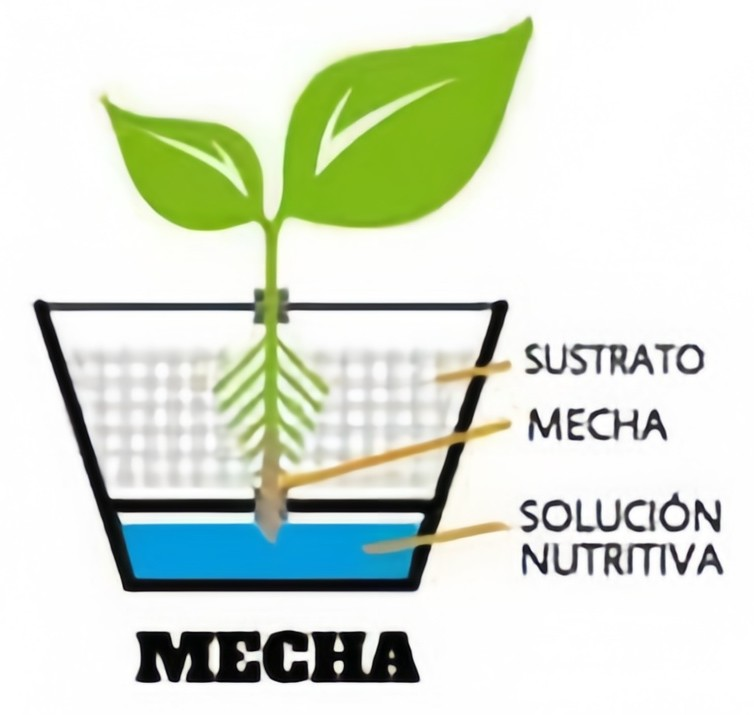
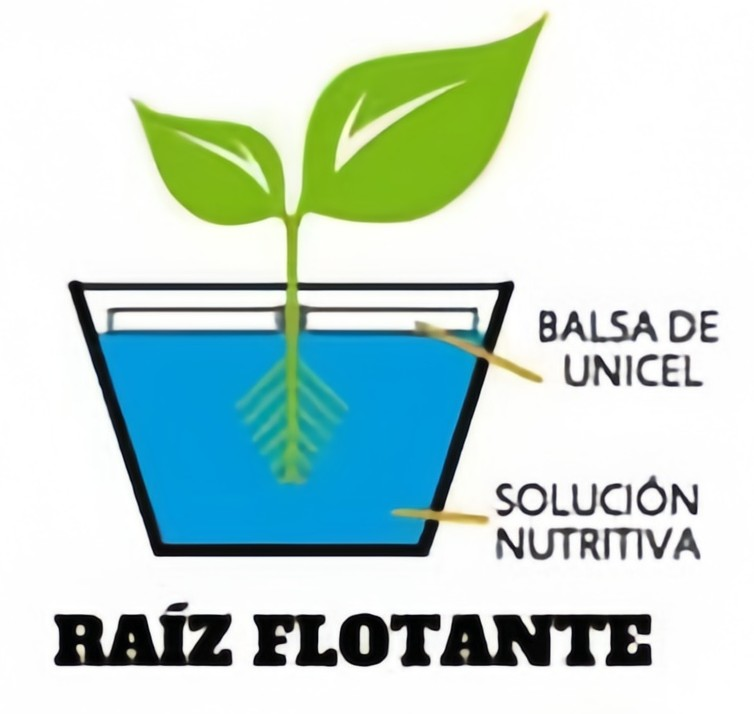
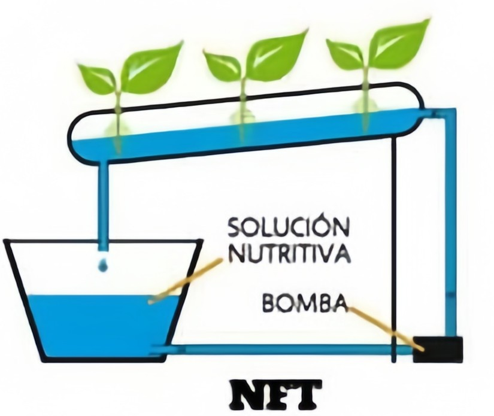
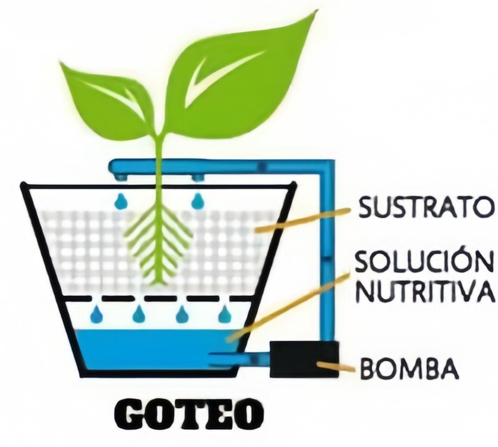
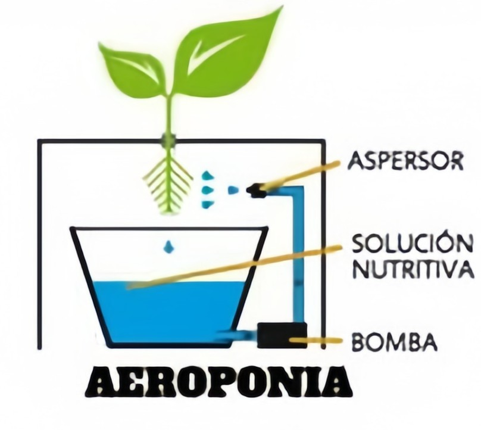

🍃 Sistema de mecha: Es el más sencillo y funciona mediante una mecha que transporta los nutrientes hacia las raíces.

🌊 Raíz flotante: Las plantas flotan sobre una solución nutritiva, permitiendo un crecimiento rápido.

🚿 NFT: Un flujo continuo de agua con nutrientes circula por las raíces.

💦 Goteo: Se suministran nutrientes en pequeñas cantidades directamente a cada planta.

🌫 Aeropónico: Las raíces están suspendidas en el aire y se rocían con nutrientes.
